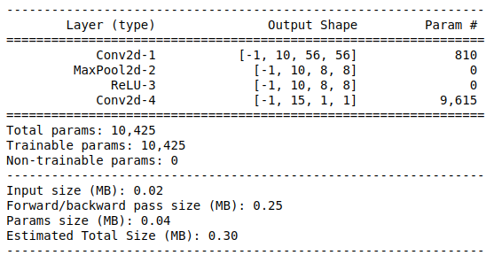
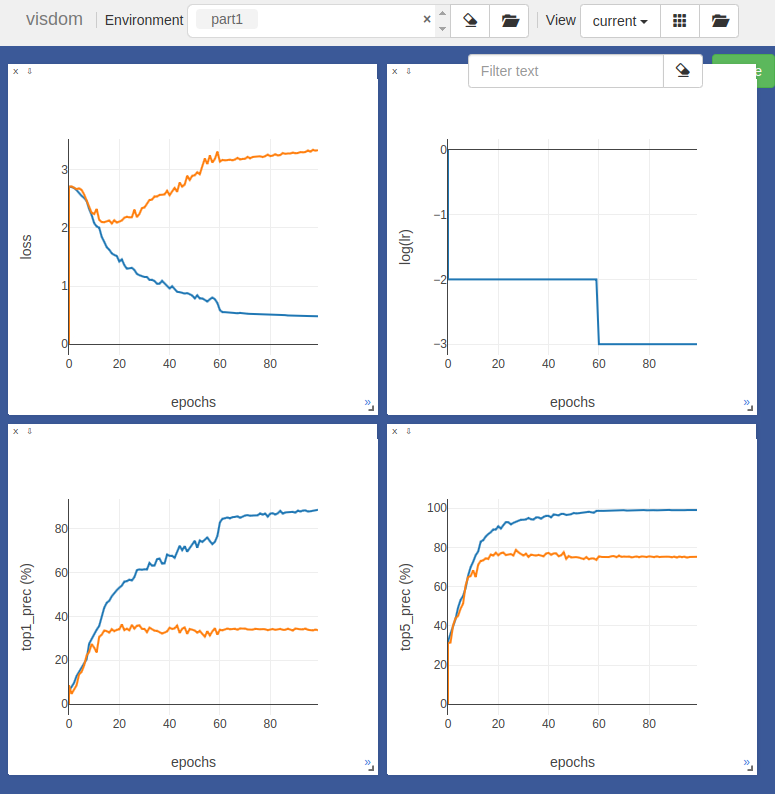
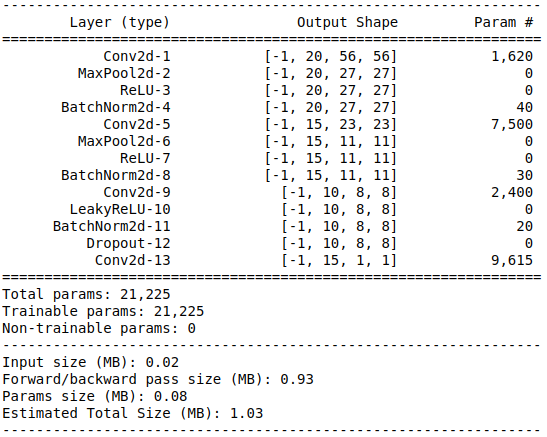
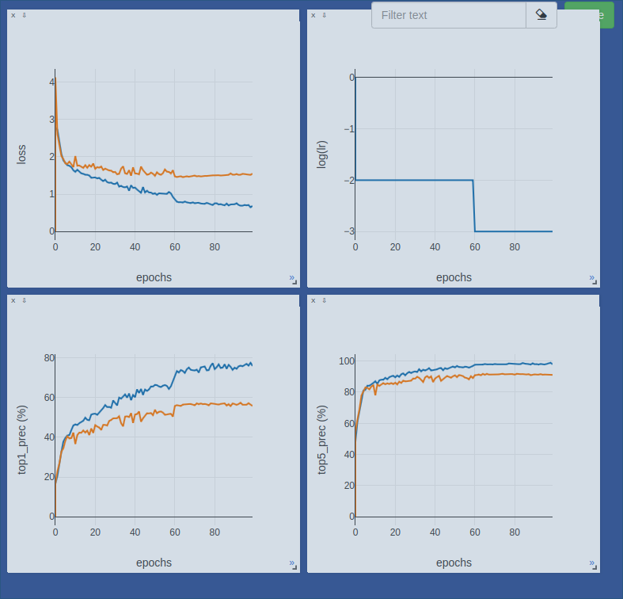
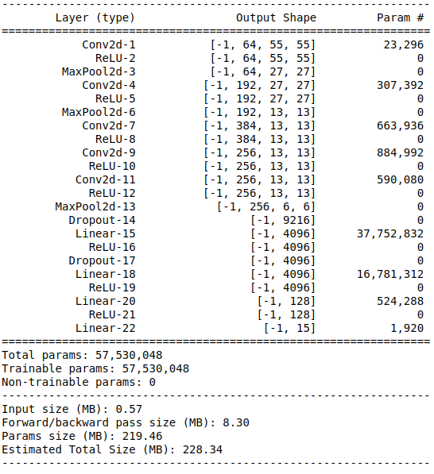
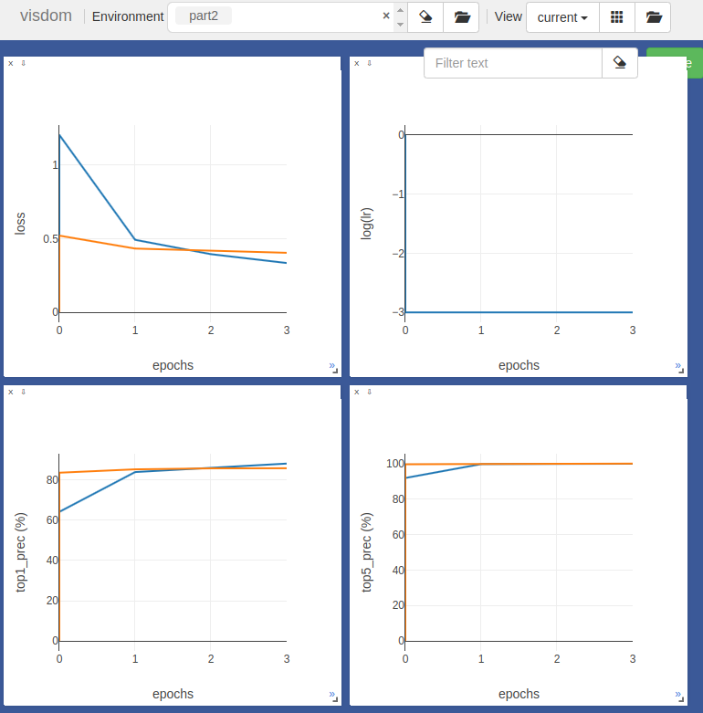
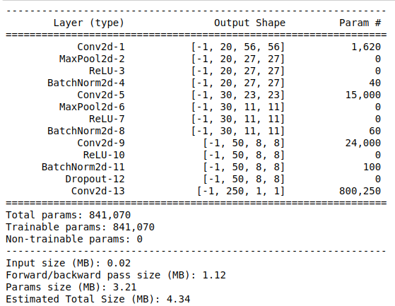
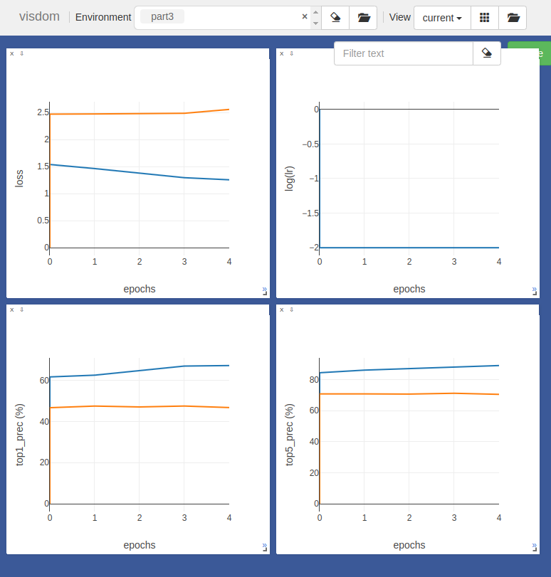
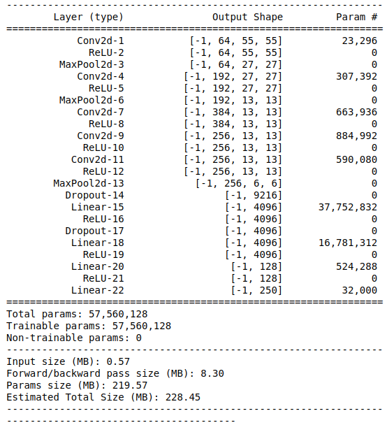
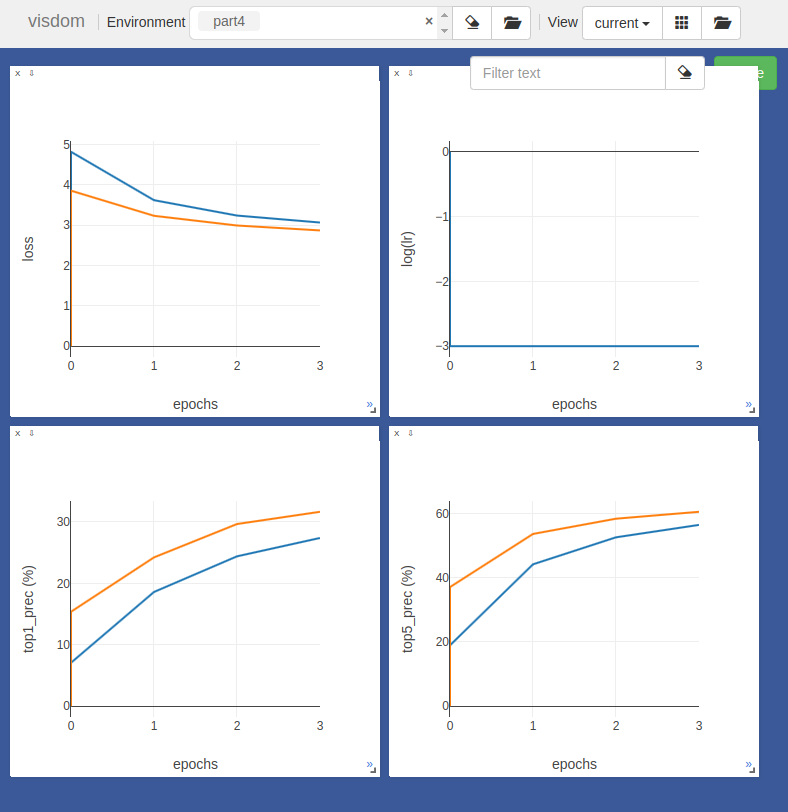

Project 6: Deep Learning

Pre-Trained AlexNet with last classifier layer added in. (Han, Zhong, Cao, & Zhang, 2017)
The purpose of this assignment was to explore how Deep Networks can be used scene recognition. The tool used here was PyTorch.
- Part 0: Deep Learning & concepts behind it.
- Part 1: Simple Net.
- Part 2: Classification with Pre-Trained AlexNet.
- Part 3: Extra Credit - Humans Sketch Objects.
Part 0: Deep Learning & concepts behind it.
0.1: Deep Learning
Deep Leaning is a field of Machine Learning concerned with different, complex structures of neural networks. The general form of Deep Learning model features a cascade of layers of non-linear processing units (Like ReLU) for feature extraction and transformation. Each layers represent different levels of abstraction. The models can be used for supervised classification learning, or unsupervised pattern analysis /learning.
In this project, we will be focusing on the supervised Convolutional Neural Network structures to classify 15-scenes dataset.
0.2: Why it is a 'black box': the importance of learned parameters
In Neural Networks, the weights of the path from one Neuron/Perceptron Node from another are adjusted by the backpropagation process. First, the loss from the expected output and the current output from a layer is calculated, then the gradient (the derivative of the squared error function) based on that loss is calculated in order to adjust the weights of that layer. The chain rule for derivatives makes it possible to calculate gradients for each layer.

The diagram of feed forward of information and backpropagation.(Mekic, 2014)
Because weights calculated while training rather than being pre-defined, these are usually called 'learned parameters'. As long as momentum, learning rate, and weight decays are set well, as well as the general structure of the network, other features of the model do not need to be engineered in order to get well-performing models.
0.3: Results of Vanilla Network Structure.
The structure of the unmodified Convolutional Network.
In the beginning, we were given a model with a feature network that only consisted of one convolutional layer, one max-pooling layer, and one rectified linear (ReLU) layer. The last layer, which is a part of the classifier component, is a dense, fully connected convolutional layer. It seems that I can get up to 36.348% accuracy after 100 epochs, perhaps due to the structure being too simple. The fact that testing loss only went up as we had more epochs mean that the model was probably learning things wrong.
The performance for part 0.
Thus, in part 1, I will try to jitter the images, normalize features, and make the structure more complex to get better accuracy.
Part 1: SimpleNet (Run on GPU)
1.1: Jittering of images
The one jittering I did was randomly flipping the image horizontally by 50% chance. The reason for this is to mix up left-right orientation enough so if the photos were mostly taken from one side, the model would not only consider those photos that are taken at that position for classification.
1.2: Input/Output Normalization
For both input and output, I normalized each set based on their respective mean and standard deviation. First, it would subtract each image by its mean, then divide that subtraction by the standard deviation.
1.3: SimpleNet modification
Graphical Visualization of SimpleNet I have created.
In order to improve my accuracy above 50%, I added more Convolutional, Max-Pool, and ReLU layers. Note that I add Conv2d, MaxPool2d, and ReLU 3 times, except I do not put the MaxPool between the last Conv2d-ReLU layer series (it is because the dimension fo the network got too small at that point). Also, the last ReLU layer I tried was LeakyReLU, because I thought it would solve 'zero dying' problem, where gradients to update weights for ReLU layer stays zero because of the slope of 0 if the neuron node is not activated. There was some improvement in the accuracy performance around ~1%.
The structure of the modified Convolutional Network.
Also, in order to stabilize the neural networks, I added Batch Normalization after each ReLU/LeakyReLU unit. For each Batch Normalization layer, I set the weight to be in a normal distribution with mean=0 and std.dev=1.
At the end of features layers (right before the classifier convolution layer, which is the last layer of this network), I added a dropout layer in order to reduce overfitting in the network by dropping random weights. This prevents the network from learning wrong things from training data that does not necessarily apply to the testing data.
The performance for part 1.
Unlike as in part 0, the testing loss now goes down throughout, showing improvement. Also, I now get the accuracy of 55.343%.
Part 2: Classification with Pre-Trained AlexNet.
Pre-Trained AlexNet with last classifier layer added in. (Han, Zhong, Cao, & Zhang, 2017)
The benefits of fine-tuning with a pre-trained network is that the pre-trained network already contains enough learned features that could also work for other problems. This is called transfer learning. In this case, we are trying to transfer the "knowledge" gained from original AlexNet problem to the 15-scenes problem.
The structure of the modified Convolutional Network.
First, I added a linear layer to reduce dimensionality from 4096 to 128.
The I added a non-linearlity layer in the form of ReLU layer to allow more room for more abstract learning beyond linear relationship.
Then, I finally added the last linear layer to reduce size to a vector of 15.
The performance for part 2.
Using pre-trained AlexNet took less epochs: only the last added layers (two dimension-reduction linear layers and one ReLU layer) had to be adjusted mostly to get the desired result. The accuracy I got was 85.695%
Part 3: Extra Credit - Humans Sketch Objects.
I also attempted doing some classification problems with Human Sketch data.
This data has 250 classes total. To train, I randomly selected 40 from the 80 images for each, and split into train and test datasets. The following is the splitted dataset: LINK
First, I created a new neural network structure by modifying the SimpleNet called SketchNet, which has more channels than SimpleNet architecture. The following is the architecture of it.
And the performance I got. The best testing accuracy was 47.490%.
I also attempted to use pre-trained AlexNet to classify. However, it did even poorly at 31.64% of classification accuracy.
 TThus, the conclusion made from this experiment is that: classifying the sketch data is not really a similar task to scene recognition. Also, note that SketchNet, which was a slight modification of SimpleNet, still did better than AlexNet. That probably indicates AlexNet is too deep for this task. Unless we can use ResNet or other techniques for this task, it would be hard to classify this dataset adequately.